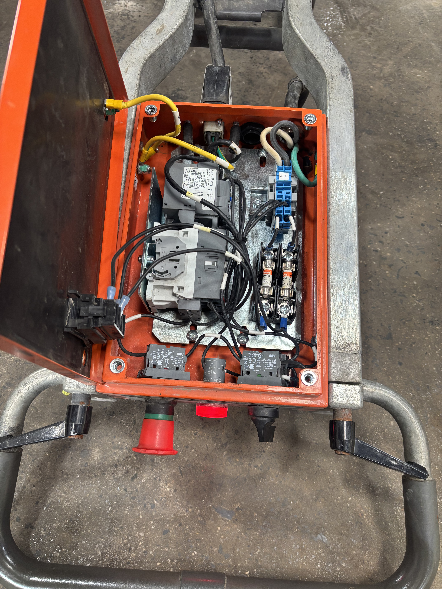
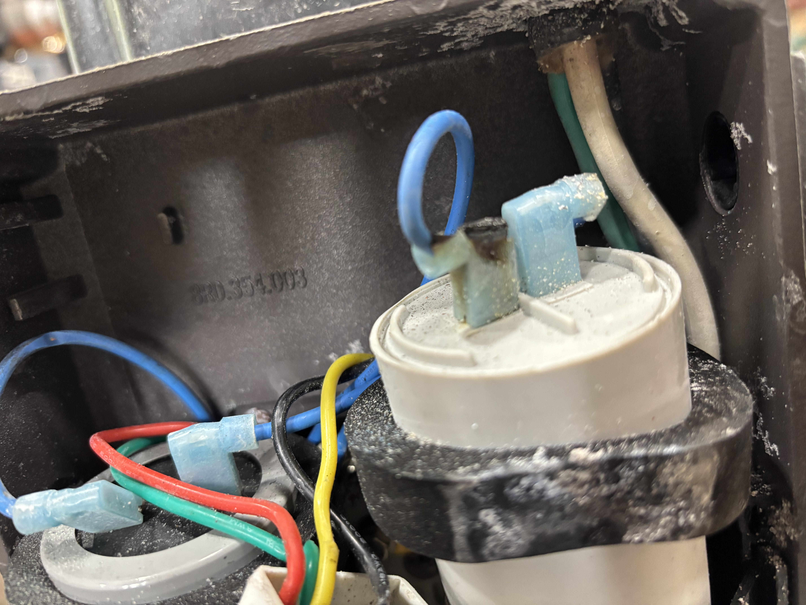
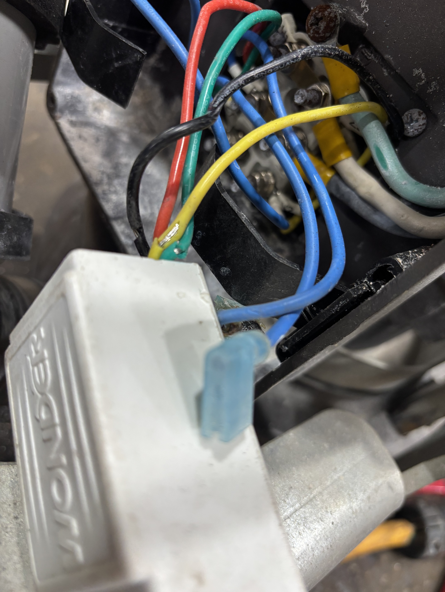

Upon inspection of this Husqvarna PG280 floor grinder, I found that the 110V CSCR motor did not run and the thermal overload relay would trip after a few moments.

I quickly verified that the motor wasn't mechanically seized. With this ruled out, I needed to determine whether this was a motor-side or control-side fault. To do this, I took a current reading on the motor hot feed after the overload.
The motor was drawing ~45 amps consistently until the overload tripped. This implied to me that there was likely a bad start capacitor or loose connection. My next step was to open the terminal box for a visual inspection and some more measurements.


Inspection of the motor starting components revealed catastrophic thermal damage to a start capacitor terminal and the capacitor itself. I also found that each one of the start winding cutoff device's wires had damaged insulation.
This is a very common failure mode for electrical construction equipment, especially floor grinders and saws. The constant harsh vibration causes the spade terminals to loosen up, the added contact resistance creates excessive heat loss, and soon the connection is ruined.
Before ordering parts and for the sake of thoroughness, I decided to quickly verify all the control components were functioning properly as well. For such testing, I install an extension cord with a known-good load of equivalent operating current to the original equipment. In this case I used a 10 amp heat gun. Testing revealed no control issues under load.
I replaced both capacitors and the modular auxilliary winding cutoff. While it would have been possible to apply heat shrink or liquid electrical tape and reterminate the module wires, the circuitry was potted and verifying with any certainty no internal damage had occured from intermittent shorting was impossible. I also redid all of the wiring with new spade connectors to prevent any premature repeat failures.
I verified the motor starts, runs, and that the cutoff switch engages once the motor reaches synchronous speed.